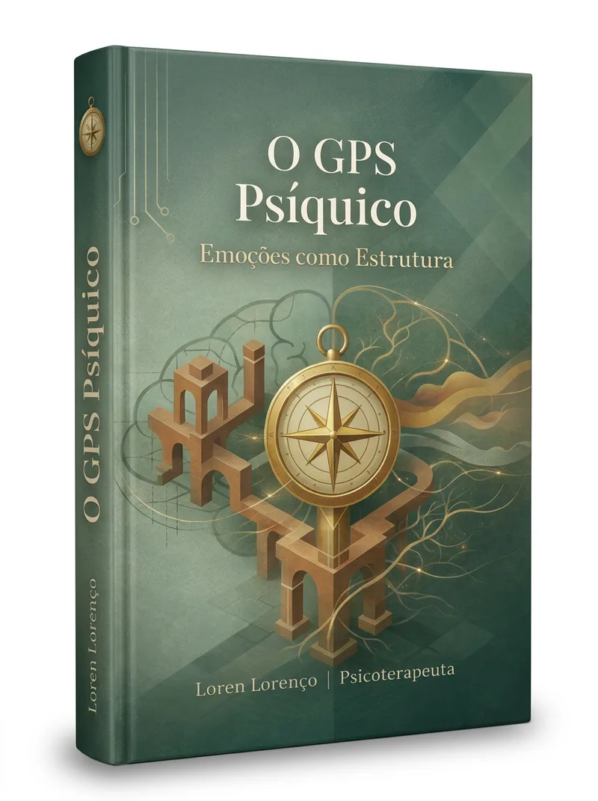

E-book · 7 capítulos · PDF imediato
O GPS Psíquico é um e-book clínico para mulheres que sustentam, resolvem, acolhem e funcionam mas, por dentro, sentem ansiedade, exaustão, culpa, irritabilidade ou a sensação de repetir os mesmos padrões.
Este material te ajuda a reconhecer a estrutura por trás do que você sente: emoções recorrentes, sintomas, vínculos difíceis, mecanismos de defesa e lugares internos que você aprendeu a ocupar para se manter segura, aceita ou necessária.
Quando você entende a estrutura, o sintoma deixa de ser uma ameaça. E começa a virar informação.
Preço de lançamento · Garantia incondicional de 7 dias
Quero acessar o GPS Psíquico →Compra segura via Hotmart · PIX, boleto e cartão

Quem já leu
"Não esperava encontrar tanta precisão num e-book. Cada capítulo me fez nomear algo que eu não conseguia articular."
C.M.
Psicóloga
"Li de uma vez. A parte sobre padrões repetitivos foi cirúrgica. Finalmente entendi o que estava por baixo."
R.A.
Advogada
"Diferente de tudo que já li sobre ansiedade. Fala da estrutura, não do sintoma. Mudou minha perspectiva."
F.S.
Professora
Você sente que algo acontece por dentro, mas ainda não conseguiu nomear com clareza.
Você percebe que repete padrões nos vínculos, no trabalho ou consigo mesma, e entender isso racionalmente ainda não foi suficiente para mudar.
Você já buscou autoconhecimento, terapia, leituras ou podcasts, mas sente que ainda falta uma peça mais profunda.
Você reage de formas que reconhece como suas, mas não consegue explicar de onde vêm ou por que persistem.
Você desconfia que o que sente não é apenas estresse: e que a resposta não está em relaxar mais, mas em entender mais.
Você quer uma leitura clínica do que você sente, não uma lista de dicas para se sentir melhor.
Este e-book é para você
Se qualquer um desses pontos ressoa, esse material foi escrito para você.
Sente ansiedade de forma recorrente, mas as explicações que encontra nunca chegam à raiz.
Vive em sobrecarga emocional e já não distingue o que é cansaço do corpo do que é cansaço da mente.
Repete os mesmos padrões nos relacionamentos, no trabalho, consigo mesma. E já percebeu isso.
Busca autoconhecimento real, sem abordagens superficiais ou promessas motivacionais.
Quer entender a estrutura interna que sustenta o que sente, pensa e repete.
Está em processo terapêutico e quer aprofundar a compreensão com uma leitura clínica complementar.
R$ 37,90 · Preço de lançamento · Garantia de 7 dias
Conteúdo
R$ 37,90 · Preço de lançamento · Acesso imediato
Quando você não entende a estrutura por trás do que sente, tudo parece bagunça.
A ansiedade parece surgir do nada. A exaustão parece fraqueza. A irritação vira culpa. O corpo parece estar contra você. E os padrões que se repetem começam a ser confundidos com personalidade.
Mas quando você começa a ler esse mapa, algo muda.
Você passa a reconhecer que muitas das suas reações têm uma lógica. Que certos sintomas não aparecem por acaso. Que alguns vínculos ativam lugares antigos dentro de você. Que a culpa, o controle, a hiperfunção e a sobrecarga podem ser respostas aprendidas: não defeitos pessoais.
Entender o mapa interno não resolve tudo de uma vez. Mas organiza o caminho. Você começa a diferenciar o que sente, o que repete, o que protege, o que carrega e o que talvez já não precise mais sustentar.
E essa clareza muda a forma como você olha para si.
Porque o que antes parecia confusão começa a revelar uma estrutura. E onde existe estrutura, existe possibilidade de consciência e transformação.
Segurança
Se dentro de 7 dias após a compra você sentir que o conteúdo não é para o seu momento, basta solicitar o reembolso integral pelo Hotmart. Sem perguntas. Sem burocracia. O risco é zero.
Um material de leitura clínica que oferece clareza sobre a estrutura que sustenta o que se repete, e as direções possíveis para a mudança real.
GPS Psíquico · E-book
Preço de lançamento · Acesso imediato após o pagamento